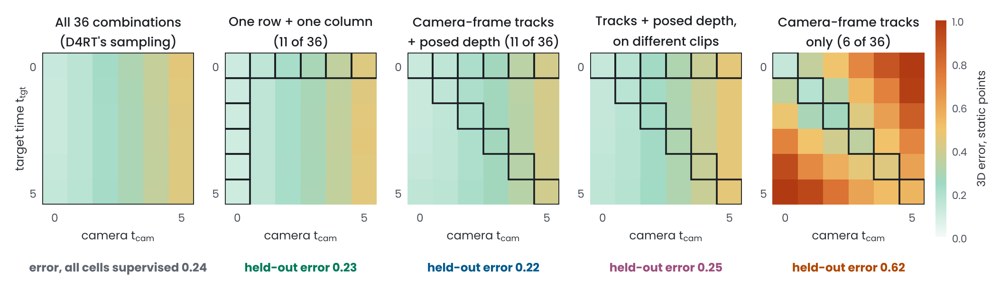
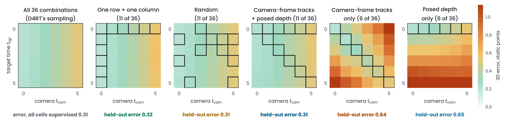

Sparse training queries · D4RT-style model
Which time-camera combinations does a D4RT-style model need to see?
Trained on one row and one column of the 6 × 6 time-camera grid (11 of 36 combinations), a small D4RT-style model answered the combinations it never saw as well as one trained on all 36. Trained only where time and camera coincide, which is all that camera-frame tracks provide, it confused the two; one row of posed depth fixed that, even when it came from other clips.
11 of 36
combinations, one row and one column: error 0.23 on held-out static points,
against 0.24 when all 36 are supervised.
2.5× the error
when only ttgt = tcam is supervised, as with camera-frame tracks: worse on
100 of 100 test scenes and in every seed.
+1 row
of posed depth (ttgt = tsrc) added to those tracks brings the error back to 0.22,
and to 0.25 when it comes from other clips.
01The question
D4RT answers queries (u, v, tsrc, ttgt, tcam): where the point seen at pixel (u, v)
of frame tsrc is at time ttgt, in the coordinates of the camera of frame tcam. Its training draws ttgt
and tcam independently and sets them equal 40% of the time, so every time-camera combination is supervised. Real labels are often
narrower. Camera-frame 3D tracks (2D tracks plus per-frame depth) only give queries with ttgt = tcam; posed depth
only gives ttgt = tsrc. Does the model answer combinations it was never trained on? The color-shape test suggests
it does, as long as time and camera vary independently somewhere in the labels.

Figure 1. Error on static points by target time (rows) and camera (columns), for points first seen in frame 0 of 100 new
scenes; mean of 3 models per panel, each trained from scratch with the same number of training queries. Outlined cells were supervised; the
rest were never seen in training. A static point's position depends only on the camera, so a model that keeps time and camera apart shows
errors that change across columns but not down them. Numbers below the panels: error on all held-out combinations and source frames.
02What I ran
A D4RT-style model at small scale, with D4RT's query interface: an encoder over all 6 frames of 32 × 32 video (a 3 × 3 convolution
over each frame and its difference from the previous one, 8 × 8 patches, a 3-layer transformer), and a decoder in which each query sums a
Fourier embedding of (u, v), learned embeddings of tsrc, ttgt and tcam, and an embedding of the 9 × 9 patch
around (u, v), then cross-attends to the encoder tokens, never to other queries. The clips are synthetic so that every query has exact ground
truth: a camera slides and pans over a tiled floor with 3 static and 2 moving spheres.
Each label set restricts which (ttgt, tcam) cells are supervised for every source frame; all get the same number of
training queries (5,000 steps of 8 clips × 128 queries, half on moving objects) and 3 seeds. Errors are 3D distances in scene units
(the spheres have radius 0.55 to 0.8) on 100 new scenes, for combinations with tsrc, ttgt and tcam all different,
which none of the sparse label sets contains.
03What I got
| Supervised combinations | Cells | Static points | Ratio to all 36 [95% CI] | Moving points | Ratio to all 36 [95% CI] |
|---|
| All 36 (D4RT's sampling) | 36 | 0.242 ± 0.003 | reference | 0.710 ± 0.007 | reference |
| One row + one column | 11 | 0.230 ± 0.018 | 0.95× [0.87, 1.03] | 0.745 ± 0.008 | 1.05× [1.03, 1.07] |
| Camera-frame tracks + posed depth | 11 | 0.222 ± 0.009 | 0.92× [0.87, 0.98] | 0.734 ± 0.007 | 1.03× [1.01, 1.06] |
| Tracks + posed depth, on different clips | 6 per clip | 0.247 ± 0.008 | 1.02× [0.97, 1.08] | 0.735 ± 0.005 | 1.03× [1.01, 1.06] |
| Camera-frame tracks only | 6 | 0.617 ± 0.021 | 2.54× [2.37, 2.73] | 0.851 ± 0.014 | 1.20× [1.15, 1.25] |
| Assume nothing moves (baseline) | – | 1.003 | | 1.180 | |
Mean ± sd over 3 seeds. Ratios to the all-36 model, with 95% intervals from a bootstrap over both the training
seeds and the 100 test scenes. p-values in the text: Welch’s t-tests across seeds, Holm-corrected; scene-level tests are in the repository.
- Varying independently is enough. One row and one column, and camera-frame tracks plus posed depth (11 cells each), are no worse
than all 36 on static points: error ratios 0.95 and 0.92, with 95% intervals that end at
1.03 and 0.98. On moving points they cost a small
5% and 3% (95% intervals 3 to 7% and 1 to 6%).
- Tied labels confound time and camera. With only ttgt = tcam, the static-point error is 2.5 times
higher (95% CI 2.4 to 2.7), on every one of the 100 test scenes and in every seed
(p = 0.006), and it grows with the gap between
ttgt and tcam (Figure 1): nothing in the labels says which index sets the camera. The model reads time as camera motion:
asked about a static point from one camera at different times, it moves the point by 0.33 units on average, where the other
models keep it still (0.03 to 0.04).
Moving points: 20% worse (p = 0.006).
- One row of posed depth resolves it, even from other clips. With tracks on half of the clips and posed depth on the other half,
so that no clip has both, the static-point error is 0.25, matching all 36 (ratio 1.02, 95% CI 0.97 to
1.08). Having both on the same clips lowers it further, to 0.22 (different clips give 1.11 times
the same-clips error, 95% CI 1.04 to 1.18).

Figure 2. The post-training version: a fresh decoder on the frozen encoder of an all-36 model, trained with each label set
(mean of 3 seeds). Every label set in which the time indices vary independently somewhere matches all 36, random cells included
(0.31 against 0.31). The two that keep a pair tied fail in different ways: tracks only blurs time
into the camera (error grows away from the diagonal, 0.64); posed depth only never sees time change, so it moves static
points with it (error grows down the rows, 0.65; it moves a static point by 0.34 units across target times, against 0.05 for the all-36 decoder). Both differ from all 36 across seeds (Welch
p = 0.04 and p = 1.5 × 10−4).
04What it suggests for D4RT
- Camera-frame tracks alone may not teach a change of reference frame. Queries with ttgt ≠ tcam, as in
world-coordinate tracking, need labels in which time and camera vary independently. This matters most for real videos without camera
poses, where camera-frame tracks may be the only 3D labels.
- World-coordinate tracks may not be needed for it. Camera-frame tracks plus posed depth, each easier to obtain, covered the rest,
even from different clips: tracks from videos without camera poses could be paired with posed depth from other footage.
- A cheap check at full scale: hold out queries with tsrc, ttgt and tcam all different during training and score them.
05Limits and next steps
A small model on synthetic 32 × 32 clips; the camera keeps a fixed height and tilt so that metric depth is recoverable from one
frame. At this scale the model learns camera motion well but tracks moving objects only partly: even with all 36 combinations its error on moving
points grows with the time gap (0.71 against 1.18 for assuming nothing moves). Static points, whose answer depends only on
the camera, therefore give the cleanest comparison; moving points show the same ordering. With three seeds per label set, the seed-to-seed spread
is only roughly known. Next: Kubric clips at higher resolution, and how small the share of posed-depth clips can be.
C. Zhang et al. Efficiently reconstructing dynamic scenes one D4RT at a time. CVPR, 2026.